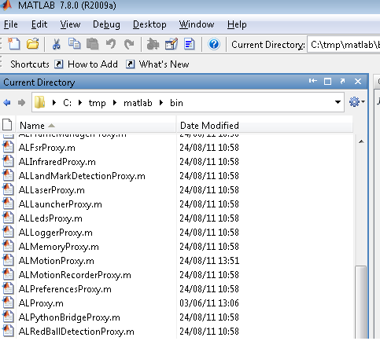
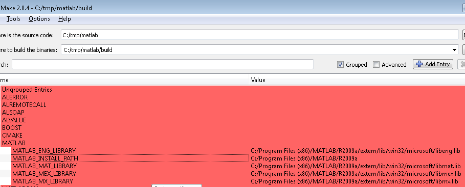

Matlab SDK
Introduction
NaoQi-Matlab-SDK allows you to call any NaoQi module method in Matlab script.
Call syntax is the same as c++, java, python or .Net. All calls are made remotely
from the pc with Matlab to real or simulated robot.
- Requirements:
- Matlab
- Naoqi C++ SDK (for source code compilation)
- NaoQi Matlab SDK (source code and precompiled library)
- Tested on:
- Matlab 2009. Windows xp 32 bits. Others configuration require modification of the CMake configuration files.
Others OS may need some changes on CMakeLists or sources code.
Use precompiled Matlab library
Content
- All c++ module API converted to matlab. For example, ALMemoryProxy.m contains all ALMemory method’s. See module APIs for more information.
- Matlab proxy library
- Matlab call library
- memory example: insert a variable in ALMemory with matlab.
- footStep example: trace footstep with Matlab
Use precompiled Matlab library
Point matlab to the toolbox folder with matlab interface:

Compilation
Windows
Use CMake to compile the naoqi-Matlab-SDK.
z$ cd matlab
z$ mkdir build
z$ cd build
z$ cmake -DCMAKE_TOOLCHAIN_FILE=sdkpath/naoqi-sdk-1.12.0.26-linux32/toolchain-pc.cmake ..
- Depending your matlab version, CMake may not find Matlab install folder. In CMake GUI or with command line, fill the matlab variable:
- ${MATLAB_INSTALL_PATH} for example C:\Program Files (x86)\MATLAB\R2009a
- ${MATLAB_LIBRARY_DIR} for example C:\Program Files (x86)\MATLAB\R2009a\extern\lib\win32\microsoft
- ${MATLAB_INCLUDE_DIR} for example C:\Program Files (x86)\MATLAB\R2009a\extern\include
and configure again.

Examples
Get joint name in cells matrix
motion = ALMotionProxy('127.0.0.1');
names = motion.getAngles('Body',false);
You can see a matrix named “names” with all joints name.
Helloworld example
tts = ALTextToSpeechProxy('myRobotIP',9559);
tts.say('hello world');
ALMemory::insertData example
mem = ALMemoryProxy('127.0.0.1',9559);
mem.insertData('matlabVariable',5);
Using Naoqi.Net with Matlab
On Microsoft Windows, Matlab allows you to use a .Net library from within an m file. To use this approach, please first follow the instructions for installing naoqi.net. Once installed, you can use the following approach in an matlab file.
NET.addAssembly('C:\Program Files (x86)\Aldebaran\NAOqi.Net SDK *.*.*.*\naoqi-dotnet4.dll')
m = Aldebaran.Proxies.MotionProxy('127.0.0.1',9559)
m.getSummary()
m.getAngles('Body',true)
angles = m.getAngles('Body',true)
tts = Aldebaran.Proxies.TextToSpeechProxy('robotName.local',9559)
tts.say('Hello from Matlab through DotNet.')
Type conversion
Module API methods sometimes require or return an ALValue. ALValue is a Cell or Cell Array in Matlab and can often be converted to a simple matlab type.
| C++ |
Matlab |
|---|
| bool |
bool |
| int |
int32 |
| float |
double |
| string |
string |
| ALValue::binary |
not managed |
| vector<float> |
cells array |
| vector<int> |
cells array |
| vector<string> |
cells array |
| ALValue |
cells |
{kind=link}
{kind=link}